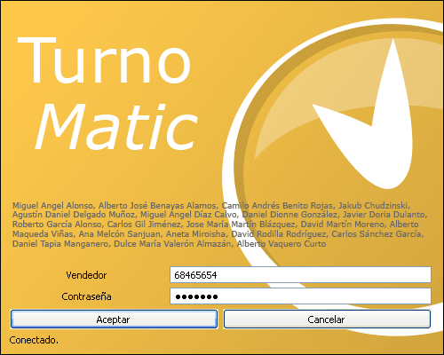
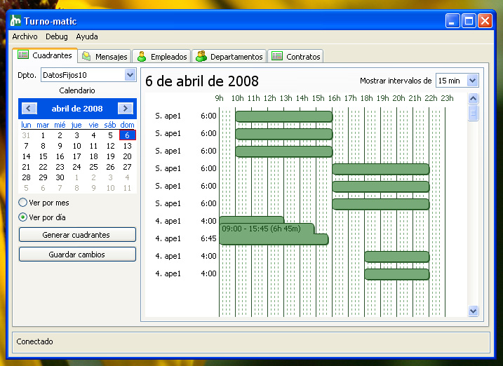
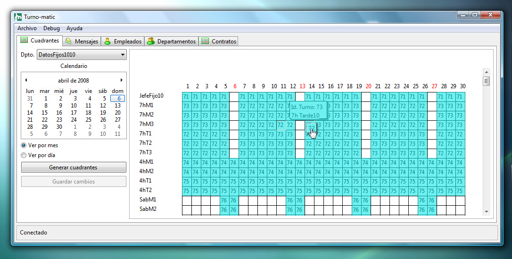
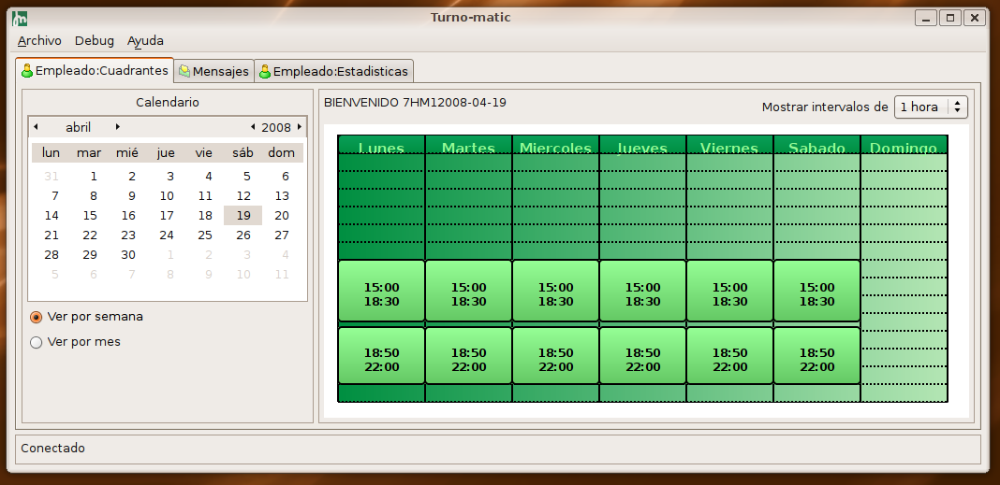

Intefaces
Login
|  |
Esta ventana es al mismo tiempo, introducción a la aplicación y ventana de autenticación. Mientras el usuario rellena su número de usuario y la contraseña, la aplicación conecta con la base de datos, sin interferir con la actividad del usuario. |
Cuadrantes
|  |
El interfaz de cuadrante diario permite una rápida e intuitiva visualización de los horarios del día de los empleados de un departamento. La información visible se amplía con sólo pasar el cursor, y se permite modificar los horarios con un simple arrastrar y soltar. Se adapta a las necesidades del usuario, mostrando los horarios en intervalos de 5, 15, 30 y 60 minutos. Además, cada tipo de usuario tiene distintas opciones para ver el cuadrante, según sus necesidades. |
La imagen anterior corresponde al cuadrante que puede ver un jefe de departamento, un cuadrante diario horizontal en el que se ve a todos los empleados, fácilmente editable mediante arrastrar y soltar.
También puede ver el cuadrante de forma mensual, como muestra la siguiente imagen:
|  |
La imagen siguiente corresponde al cuadrante que puede ver un empleado, ordenado en vertical y semanal, en el que sólo ve su horario.
|  |
CU-09 - Revisar horario
CU-27 - Crear/modificar cuadrante
CU-28 - No poder crear/modificar cuadrante